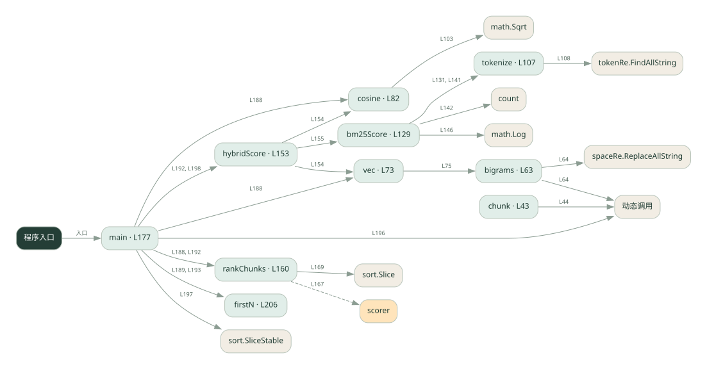

3-5 · 全课程第 45 节
切块、混合检索与重排
042.go
源码快照 d3209987561e · 静态解析 · 2026-09-10
01 / 要完成的事
把文档切块，用字符向量与词项分数召回，再对候选排序。
02 / 为什么要做
整篇检索粒度粗；只用一种匹配信号可能漏掉相关片段。
03 / 当前代码状态
向量来自字符二元组，稀疏分数是简化公式，排序是本地计算；没有下载 embedding 模型，也没有调用真实重排模型。
主要展示本地计算、内存状态或模拟流程；是否写文件/启动子进程请看调用表。 本次只做静态解析，没有运行练习，也没有替你填写或修改原代码。
04 / 调用图
打开大图 ↗实线：源码中的直接调用；虚线：函数引用/注册、动态调用或按方法名推断的候选。L 是调用所在源码行号。箭头不表示执行顺序或每次必经；分支、循环、异步调度及框架内部调用需结合源码。灰色是外部/未解析目标，橙色是动态分发；省略 print、len 和常规容器操作以减少干扰。孤立函数可能尚未接入。

先从 main（程序入口） 出发，沿箭头找到本文件函数，再查看外部调用或动态分发。右侧调用清单保留所有静态调用点，能回到原文件逐行对照。
05 / 函数定位
| 函数 / 定义行 | 职责（源码注释） | 内部调用 |
|---|---|---|
chunkL43 | chunk：按固定窗口切块，块与块之间保留重叠（步长 = 窗口 - 重叠） | 动态调用, len, append, string |
bigramsL63 | bigrams：字符 bigram（去空白后，相邻两字符一组） | 动态调用, spaceRe.ReplaceAllString, len, append, string |
vecL73 | vec：文本 → bigram 词频向量 | bigrams |
cosineL82 | cosine：余弦相似度 = 点积 / (|a| * |b|) | len, float64, math.Sqrt |
tokenizeL107 | tokenize：中文单字 / 英文单词（简化分词） | tokenRe.FindAllString |
bm25ScoreL129 | bm25Score：简化 BM25（词频 + 逆文档频率） | tokenize, count, math.Log, float64 |
hybridScoreL153 | hybridScore：dense + sparse 加权融合 | cosine, vec, bm25Score |
rankChunksL160 | rankChunks：按分数降序返回 chunk 下标（对应 Python 的 sorted + CHUNKS.index） | append, scorer, sort.Slice, make, len |
mainL177 | 以源码函数体为准；下列调用展示其依赖。 | fmt.Println, fmt.Printf, len, rankChunks, cosine, vec, firstN, hybridScore, append, 动态调用, sort.SliceStable |
firstNL206 | 以源码函数体为准；下列调用展示其依赖。 | len |
这样做的优点
可比较切块、重叠和混合权重对候选的影响。
代价与局限
本地字符二元组不是预训练语义 embedding，稀疏分数也是简化实现；两种分数尺度未必可直接相加。
适用场景
理解 RAG 各环节和做小数据实验。
不宜直接照搬
把演示效果等同真实语义检索或生产 BM25 性能。
动手检验理解
问一个与原文同义但措辞不同的问题，观察字符匹配的局限。
有未实现位置时先预测，再补齐验证。能启动不等于逻辑正确。
查看全部 62 个静态调用 / 引用点
| 调用方 | 目标 | 源码行 | 类型 |
|---|---|---|---|
| chunk | 动态调用 | 44 | 调用 |
| chunk | len | 47 | 调用 |
| chunk | len | 49 | 调用 |
| chunk | len | 50 | 调用 |
| chunk | append | 52 | 调用 |
| chunk | string | 52 | 调用 |
| bigrams | 动态调用 | 64 | 调用 |
| bigrams | spaceRe.ReplaceAllString | 64 | 调用 |
| bigrams | len | 66 | 调用 |
| bigrams | append | 67 | 调用 |
| bigrams | string | 67 | 调用 |
| vec | bigrams | 75 | 调用 |
| cosine | len | 83 | 调用 |
| cosine | len | 83 | 调用 |
| cosine | float64 | 89 | 调用 |
| cosine | float64 | 94 | 调用 |
| cosine | float64 | 98 | 调用 |
| cosine | math.Sqrt | 103 | 调用 |
| cosine | math.Sqrt | 103 | 调用 |
| tokenize | tokenRe.FindAllString | 108 | 调用 |
| bm25Score | tokenize | 131 | 调用 |
| bm25Score | tokenize | 141 | 调用 |
| bm25Score | count | 142 | 调用 |
| bm25Score | math.Log | 146 | 调用 |
| bm25Score | float64 | 146 | 调用 |
| bm25Score | float64 | 146 | 调用 |
| bm25Score | float64 | 146 | 调用 |
| bm25Score | float64 | 147 | 调用 |
| hybridScore | cosine | 154 | 调用 |
| hybridScore | vec | 154 | 调用 |
| hybridScore | vec | 154 | 调用 |
| hybridScore | bm25Score | 155 | 调用 |
| rankChunks | append | 167 | 调用 |
| rankChunks | scorer | 167 | 调用 |
| rankChunks | sort.Slice | 169 | 调用 |
| rankChunks | make | 170 | 调用 |
| rankChunks | len | 170 | 调用 |
| main | fmt.Println | 179 | 调用 |
| main | fmt.Println | 180 | 调用 |
| main | fmt.Println | 181 | 调用 |
| main | fmt.Printf | 182 | 调用 |
| main | len | 182 | 调用 |
| main | fmt.Printf | 184 | 调用 |
| main | rankChunks | 188 | 调用 |
| main | cosine | 188 | 调用 |
| main | vec | 188 | 调用 |
| main | vec | 188 | 调用 |
| main | fmt.Printf | 189 | 调用 |
| main | firstN | 189 | 调用 |
| main | rankChunks | 192 | 调用 |
| main | hybridScore | 192 | 调用 |
| main | fmt.Printf | 193 | 调用 |
| main | firstN | 193 | 调用 |
| main | append | 196 | 调用 |
| main | 动态调用 | 196 | 调用 |
| main | sort.SliceStable | 197 | 调用 |
| main | hybridScore | 198 | 调用 |
| main | hybridScore | 198 | 调用 |
| main | fmt.Printf | 200 | 调用 |
| main | fmt.Println | 202 | 调用 |
| main | fmt.Println | 203 | 调用 |
| firstN | len | 207 | 调用 |